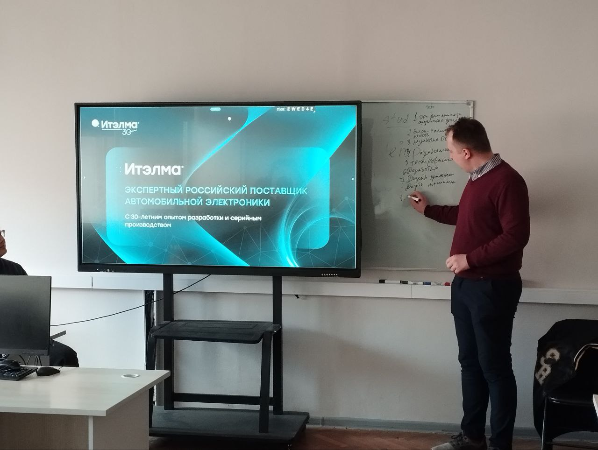
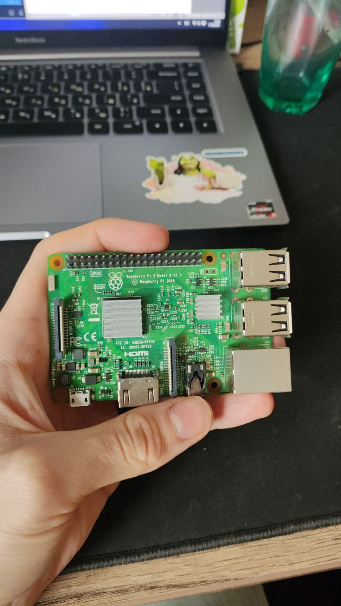
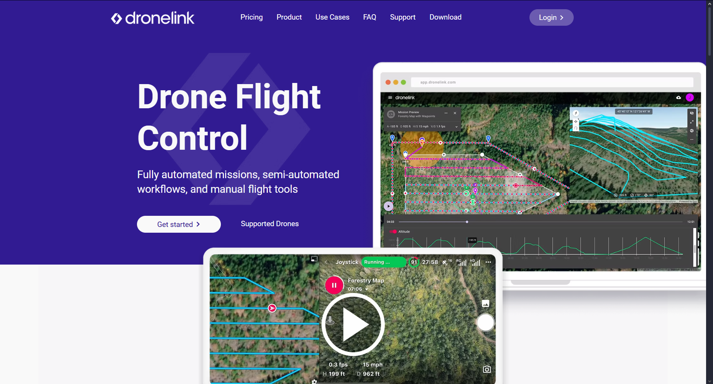

Введение в дистанционное управление
Базовые принципы дистанционного управления беспилотной техникой включают передачу управляющих команд оператором через радиоканал и получение телеметрических данных в реальном времени. Использование современных технологий, таких как автоматизированные системы управления, GPS и сенсоры, значительно повышает точность, безопасность и эффективность полётов. Современные решения позволяют осуществлять дистанционный контроль как в ручном, так и в автоматизированном режимах, расширяя возможности применения беспилотников и упрощая их управление.
Аппаратная часть проекта
Аппаратные компоненты нашего проекта включают электромоторы, контроллеры и сенсоры, которые обеспечивают движение, управление и сбор данных с беспилотной техники. Электромоторы отвечают за привод и маневрирование, а контроллеры управляют их работой, регулируя скорость и направление вращения. Сенсоры собирают информацию о положении, скорости, ориентации и окружающей среде, что позволяет системе точно оценивать состояние и корректировать действия беспилотника. Современные датчики, такие как гироскопы, акселерометры и GPS-модули, обеспечивают высокую точность навигации и устойчивость полёта. Все эти элементы интегрируются в единую систему, обеспечивая надежное и эффективное функционирование комплекса.
Разработка веб-интерфейса
Создание удобного и функционального веб-интерфейса для управления беспилотной техникой через браузер позволяет оператору легко контролировать устройство в реальном времени. Интерфейс отображает важные параметры, такие как положение, скорость и состояние систем, а также предоставляет инструменты для планирования маршрутов и управления аппаратурой. Использование современных веб-технологий обеспечивает быстрый обмен данными между беспилотником и пользователем, а адаптивный дизайн позволяет работать как на компьютерах, так и на мобильных устройствах. Такой подход делает управление беспилотной техникой доступным и эффективным без необходимости установки дополнительного программного обеспечения.